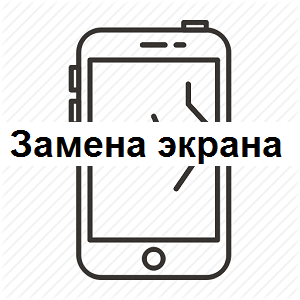
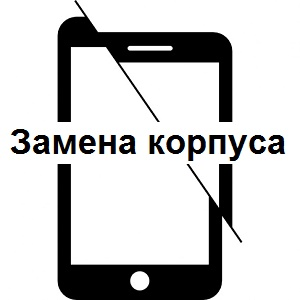
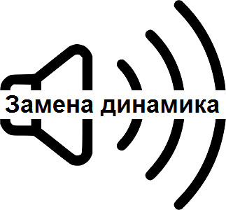

Замена экрана от 2х до 5ти дней. Заменим любой экран на любом телефоне. Гарантируем высокое качество экранов
от надежных поставщиков. Матовые, глянцевые, металлический эффект-все на Ваш вкус. Замена экрана от 2х до 5ти дней. Заменим любой экран на любом телефоне. Гарантируем высокое качество экранов
от надежных поставщиков. Матовые, глянцевые, металлический эффект-все на Ваш вкус. Замена экрана от 2х до 5ти дней. Заменим любой экран на любом телефоне. Гарантируем высокое качество экранов
от надежных поставщиков. Матовые, глянцевые, металлический эффект-все на Ваш вкус. Замена экрана от 2х до 5ти дней. Заменим любой экран на любом телефоне. Гарантируем высокое качество экранов
от надежных поставщиков. Матовые, глянцевые, металлический эффект-все на Ваш вкус.
Замена корпуса от 5ти до 10 дней. Заменим любой корпус на любом телефоне. Гарантируем высокое качество корпусов
от надеждых поставщиков. Матовые, глянцевые, металлический эффект-все на Ваш вкус. Замена корпуса от 5ти до 10 дней. Заменим любой корпус на любом телефоне. Гарантируем высокое качество корпусов
от надеждых поставщиков. Матовые, глянцевые, металлический эффект-все на Ваш вкус. Замена корпуса от 5ти до 10 дней. Заменим любой корпус на любом телефоне. Гарантируем высокое качество корпусов
от надеждых поставщиков. Матовые, глянцевые, металлический эффект-все на Ваш вкус. Замена корпуса от 5ти до 10 дней. Заменим любой корпус на любом телефоне. Гарантируем высокое качество корпусов
от надеждых поставщиков. Матовые, глянцевые, металлический эффект-все на Ваш вкус.
Замена динамика от 7ми до 14 дней. Заменим любой динамик на любом телефоне. Гарантируем высокое качество динамика
от надежных поставщиков. По понедельникам до 14.00 действует скидки в размере 5% на замену динамика. Замена динамика от 7ми до 14 дней. Заменим любой динамик на любом телефоне. Гарантируем высокое качество динамика
от надежных поставщиков. По понедельникам до 14.00 действует скидки в размере 5% на замену динамика. Замена динамика от 7ми до 14 дней. Заменим любой динамик на любом телефоне. Гарантируем высокое качество динамика
от надежных поставщиков. По понедельникам до 14.00 действует скидки в размере 5% на замену динамика. Замена динамика от 7ми до 14 дней. Заменим любой динамик на любом телефоне. Гарантируем высокое качество динамика
от надежных поставщиков. По понедельникам до 14.00 действует скидки в размере 5% на замену динамика.